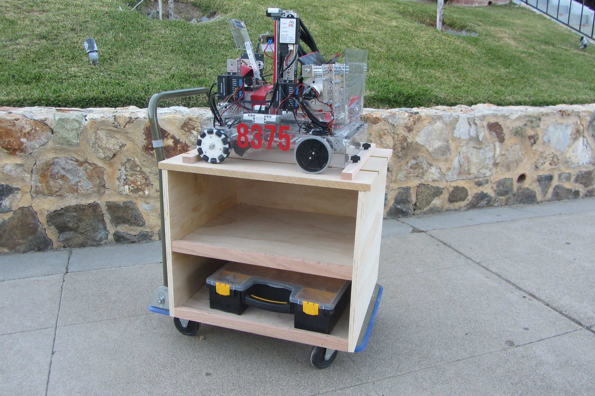
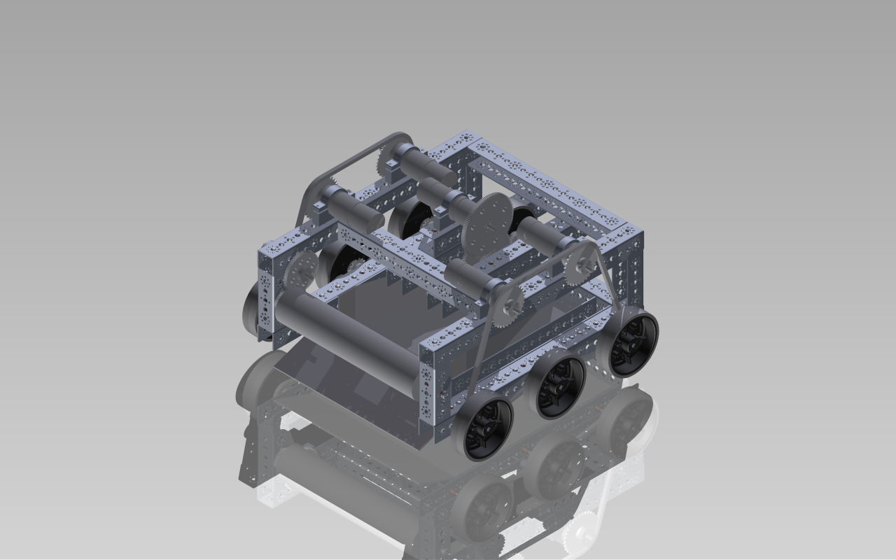

Since our team is currently exclusively juniors and we want the team to continue after we leave for college, we are seeking new members that we can work with over the summer so that they be prepared for the next season. If you are interested in applying or you know someone who wants to apply then the link can be found here.
We're giving two presentations at public libraries in the San Mateo area in early June. On Wednesday, June 3rd, we will be at the San Mateo Main Library from 6-7:45pm, followed by a presentation at the Foster City Library from 2-4pm on Saturday, June 6th. If you're interested in our team, our robot, or robotics in general, feel free to come! We will also be giving application information for people interested in joining.
On four Saturdays throughout June and July, we're leading workshops for students from grades 5-8 in the San Mateo Main Library's Oak Room. For more information, follow this link.
During our competitions last season, we had to carry our robot to each match. We wanted a way to more effectively transport the robot and several containers of tools to the field when we needed to compete. After one day of work, we built the cart pictured below.
One of the main problems with our robot last year is that our drive train was fairly weak. During the off-season, we have been considering different drive trains and their pros and cons. The drive train below is six wheel drive which would help our robot have better traction and be less susceptible to pushing and defense.
